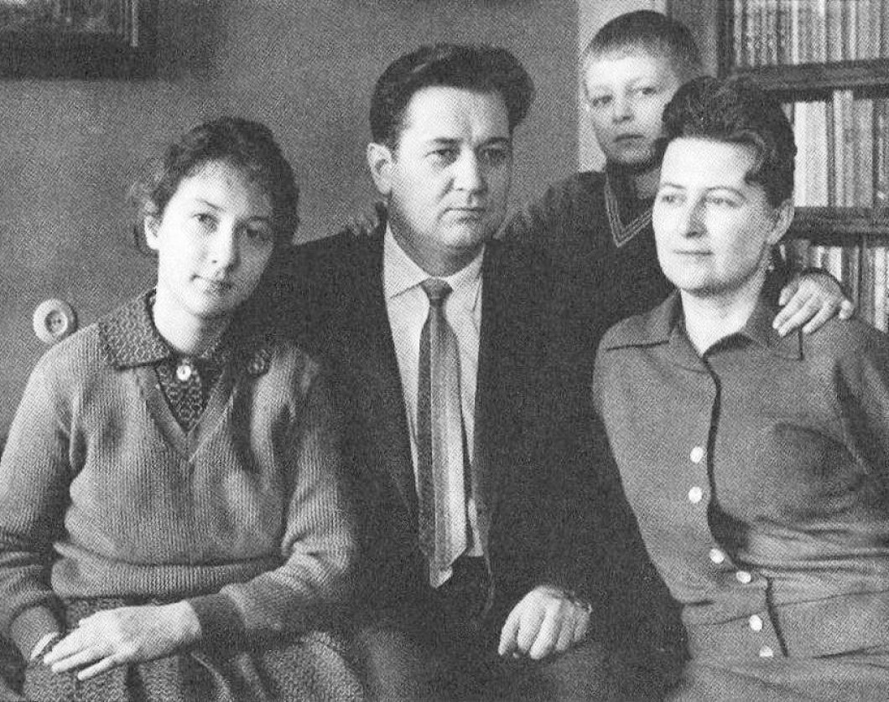
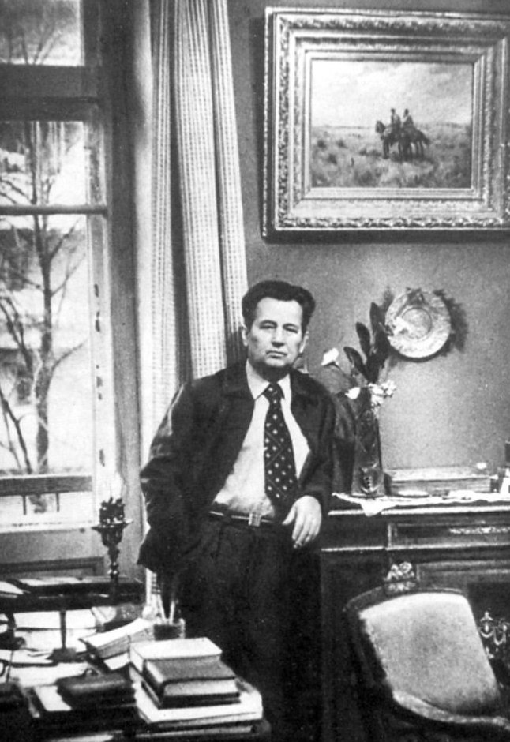
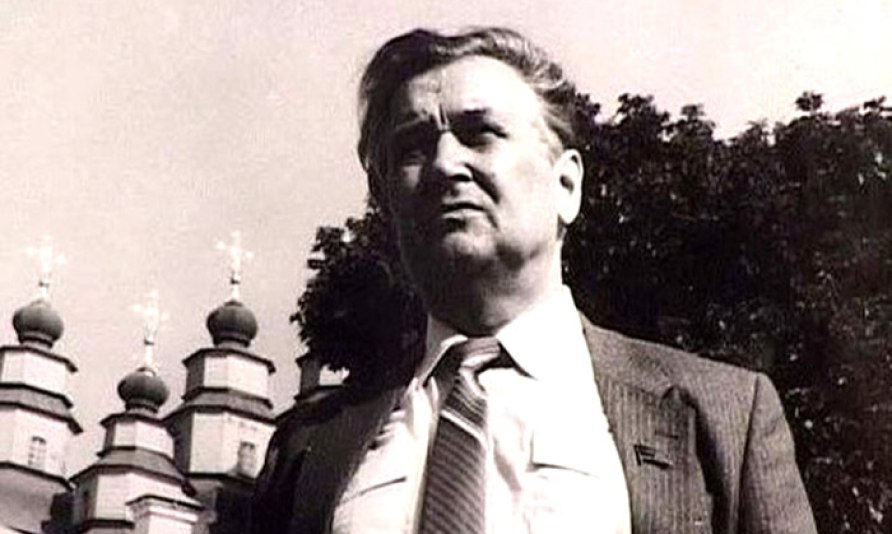
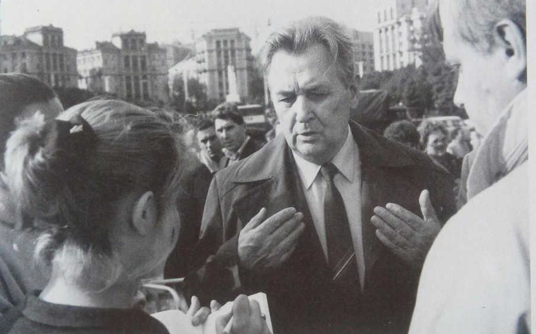

Гончар – художник світла,
Його дослідник, зображувач, поет. М. Бажан
ПОЧАТОК КАР'ЄРИ ТА ПЕРЕЇЗД ДО КИЄВА
Закінчивши Дніпропетровський університет у 1946 р., Олесь Гончар залишився асистентом на катедрі української літератури. Уже наприкінці того ж року він переїжджає до Києва, не бажаючи більше терпіти дорікання на твір «Модри Камень».
Першим помешканням у Києві стала холодна мансарда на вулиці Велика Житомирська, 23. Тепер ця вулиця носить ім’я Олеся Гончара. Молодий прозаїк тоді проживав у друга історика Олександра Ярмоленка. А далі комуналка №10 на тодішній вулиці Леніна, 66. Цю двокімнатну квартиру молодий письменник одержав від Олексія Давидова – на той момент мера столиці – до якого він звернувся після поради Натана Рибака. Туди ж переїхала його майбутня дружина Валентина після завершення університету в Дніпропетровську. 15 серпня 1947 р. молода пара в цьому помешканні провела весілля.
Під кінець 1947 р. письменник залишив аспірантуру, бо не встигав писати і навчатися водночас. Тоді ж «Вітчизна» публікує роман «Прапороносці», тираж якого склав 30 тис. примірників українською мовою і стільки ж – російською. Твір отримав схвальні відгуки від Ю. Яновського, П. Тичини, Остапа Вишні.
НОВЕ ПОМЕШКАННЯ В РОЛІТІ

Олесь Гончар із сім'єю
Так 1949 р. Спілка письменників запропонувала Гончарові переїхати в Роліт. Він обмінюється квартирою зі сім’єю українського піяніста Абрама Луфера, який помер влітку 48-го. У березні Олесь Гончар разом з дружиною Валентиною і чотиримісячною донькою Людмилою переїжджають у квартиру №65 на третьому поверсі головного корпусу кооперативу. «У побуті він був невибагливий», – згадує Валентина Данилівна при розмові з мовознавцем Пилипом Селігеєм. За три роки письменнику надійшла ще одна квартирна пропозиція, цього разу від прозаїка Івана Ле. «Олесю, займіть моє мешкання, воно ж більше і зручніше за ваше.». Але той відмовився, аргументуючи дружині тим, що «переїзд і ремонт змарнують кілька місяців, а треба писати.» Навіть зараз кабінет письменника не змінився. Письмовий стіл, канапа, на якій він відпочивав удень, журнальний столик, фотографії на стінах і, звичайно, книжкові шафи.
«Працював він каторжно, – каже Валентина Гончар, – був вимогливий до кожного слова, вимордовував себе за письмовим столом.» За цим просторим столом, зручно розташованим біля вікна, створено романи «Тронка», «Собор», «Людина і зброя», «Циклон», «Твоя зоря», чимало повістей, оповідань, нарисів, майже весь творчий доробок з 1949 року.
Писав зазвичай зранку з 10-тої по 14-ту години. Замикав двері кабінету на ключ і відключав усі телефони, а якщо комусь вдавалося додзвонитися, то инші в квартирі відповідали, що його нема. «Удосконалював текст до безконечності, – продовжує Валентина Данилівна. – Правив навіть надрукований твір. Друге видання, третє, там усюди відмінності порівняно з початковим журнальним варіантом.» Хоча навіть журнальні варіянти правилися неодноразово перед друком. Та найпершою читачкою і критикинею творів письменника була його дружина, філологиня за освітою.
Про умови в Роліті прозаїк писав у своєму щоденнику наступне (він також був одним з жителів, хто вів свій записник):
«Коли працюєш, потрібна творча гармонія. А тут щораз вдирається стільки дисонансів – хоч відбавляй… Будинок письменницький не опалюється (наше крило). А вже холодно. Галина Федорівна [Кучер] дзвонить в контору по ремонту. Саме на того й натрапила, кого треба. А у відповідь чує:
– Ідіть ви з своєю українською мовою!.. До свого Богдана Хмельницького звертайтесь!..
Аж так далеко зайшло.»
ДРУЖБА І СУПЕРНИЦТВО
З ролітівців Гончар найближче товаришував з Юрієм Яновським. Обоє на третьому поверсі, двері квартир навпроти одне одних, та й робочі кабінети розділяля лише одна стіна. У час очолення «Вітчизни» саме він рекомендував повість «Альпи» до друку, яка стала першим успішним кроком у кар’єрі відомого прозаїка. Через два десятиліття після смерти Юрія Івановича Гончар картав себе за критику «Живої води»:
«Як для Яновського дивовижно невдала річ. Та все ж я шкодую тепер, що піддався тоді на умовляння і здуру приєднався до хору критиків «Живої води». Хоч і було за що, але в тій ситуації не слід було і тобі лізти зі своєю критикою. Яка недосвідченість, яке нерозуміння обставин. Ще й досі, гірко, і сьогодні шкодую, шкодую.»
Непрості стосунки були з Андрієм Малишком. Хоча б згадати запис у щоденнику Гончара про обрання голови Спілки письменників України:
«Коли обрали мене головою спілки, – зізнавався Олесь Терентійович у щоденнику, – його мучили ревнощі, заздрощі. Це при тому, що і я вважав, що керівником СПУ мав би бути він.»
Та певні незгоди не дозволили колегам по перу розсваритися. Коли всередині 60-х років ЦК хотіло накрити Малишка мокрим рядном, Гончар вказівки не виконав.
ЧЛЕНСТВО В СПІЛЦІ ПИСЬМЕННИКІВ

Олесь Гончар у робочому кабінеті
З 1959 по 1986 роки Олесь Гончар секретар правління Спілки письменників СРСР, депутат Верховної Ради СРСР та УРСР. З 1959 і наступні дванадцять років голова правління Спілки письменників Української РСР.
Однак попри численні нагороди в письменника були проблеми з владою ще до виходу сумнозвісного роману «Собор». «Він постійно з усіма сперечався, бо казав увічі те, що думав, – розповідає Валентина Данилівна, – тому на владному Олімпі друзів у нього не було. Зі Скабою весь час сварився, особливо на Пʼятому зʼїзді спілки письменників. Щербицького зневажав через його байдужість до літератури, мови, культури, вважав його Україножером номер один. Шелест був йому ближчий, але й з ним склалися непрості стосунки.» У 1968 р. Олесь Гончар відмовився входити до складу комісії, яку сформували для засудження книги Івана Дзюби «Інтернаціоналізм чи русифікація?». Про цей випадок пізніше згадував перший секретар ЦК КПУ Петро Шелест у своєму щоденнику. Він написав, що деякі партійні керівники пропонували арештувати письменника. На це Микола Підгорний відповів, що просто так арешт героя-письменника-фронтовика їм не минеться. Відомо також є факт, що на адресу письменника приходили анонімні записки. Текст однієї з таких містить «побажання» скористатися прикладом Хвильового (себто покінчити життя самогубством). Люблячій дружині деякі послання вдавалося перехопити, аби позбавити чоловіка від зайвого хвилювання.
«Читаю в «Правде», як ФБР цькувало та шантажувало Мартіна Лютера Кінга. В 1964 р. надіслали йому анонімку: «Кінг, ти можеш зробити лише одне... Тобі прийшов кінець. В тебе є лише один вихід». (Натякали на самогубство). І згадалось, як у «соборні» дні 1968 року таку ж анонімку було й мені надіслано. Майже буквально таку. Тобі нічого тепер не зостається, як піти, за прикладом М. Хв[ильово]го… Звідки такі збіги почерків?»
КАМПАНІЯ ПРОТИ «СОБОРУ»
1968 рік ознаменувався виходом одного з найвідоміших творів Олеся Гончара – роману «Собор». У той самий рік він святкував своє 50-річчя, яке озлоблені чиновники перетворили на жахіття. Попри схвальні відгуки читачів, на засіданні ЦК Компартії України присутні жорстко критикували дану роботу. То був виступ Ватченка, за 5 днів до ювілею письменника. Людей, що стали на бік Гончара звільняли з роботи, а на день народження автор отримав телеґраму з текстом: «Вам зараз нічого не залишається, крім як пустити кулю в лоб». У висновку – заборона на друк роману протягом двадцяти років. Та попри багаточисленні закиди письменник продовжував писати. Сумним був і той факт, що для свята був зарезервований ресторан «Динамо» (популярний у тодішніх літературних колах), але через зіпсований настрій пан Олесь обмежився урочистим вечором у консерваторії.

Олесь Гончар у Новомосковську, на тлі собору, який став головним героєм роману «Собор»
«Цькують. Буквально на другий день після ювілею оскаженіли знов. Особливо за вельзевулів(В слові на ювілейному вечорі в консерваторії Олесь Гончар вжив це слово, маючи на увазі головного цькувача «Собору» дніпропетровського секретаря обкому Ватченка (приміт. В. Г)). Хоч пояснено, що малося на увазі одного, проте шапки загорілися на кількох одразу. Зустрічаючись, нібито так і кидають одне одному:
– Здоров, вельзевул.
Зґвалтували дніпропетр[овську] «Зорю». Вже дала дві пасквільні безграмотні статті по «Собору». Ох, як важко пробиватися правді!.. А може, таки має рацію читачка, що пише в привітанні: «Доля справедливого слова завжди прекрасна»?»
Переполохом також стало те, що Папа Римський висунув «Собор» на Нобелівську премію:
«Вчора [16 лютого 1968 року] був у спілці, літературна братія в переполосі, в нервовій, тривожно-радісній розгубленості. Нібито чув хтось з римських передач, що Папа Римський висунув «Собор» на Нобелівську премію.»
Першу рецензію на роман опублікували 19 січня 1968 р. у газеті «Літературна Україна». У загальному відгук був позитивний. Инші видання теж давали схвальні відгуки, як критиків, так і читачів. Наприкінці березня Олесь Гончар на прийомі в Шелеста почув: «Є відомості, ніби Ватикан збирається використати роман в антисоціалістичних цілях.» Через два дні виступ Ватченка і все змінилося в протилежну сторону…
Трапився навіть такий курйозний випадок з відгуком, надрукованим у газеті:
«Криворізька газета «Червоний гірник» (звичайно, за вказівкою з області) теж, щоб не відстати, дала статтю, грубу, «чорносотенну», як висловився один знайомий. І мало цього – редактор газети свій опус надсилає нам на домашню адресу (це теж дніпропетровський стиль: всі газети з погромницькими статтями вони підкидають там моїм родичам, навіть хворим, щоб завдати удару ще й з цього боку). І ось цей криворізький хам шле свою газету нам додому. Валя прочитала, розсердилась – і газету в конверт з припискою: «Повертаю вам газету з вашою наклепницькою статтею, бо вважаю, що вона не варта, щоб її читав О. Г.». Підписалася – дружина такого-то і відправила в Кривий Ріг.
Потім розповіла мені, посміялись, я ще пожартував: «Дивись, тебе ще покличуть нагору для проработки...» На цьому й кінчилось. Зрештою, ляпас на відстані, що його послала жінка нахабі й хамові, – це теж правомірний жанр. «Адже ж він сміє свій бруд лити у вікно, а я не можу й захищатись?» – так це витрактувала Валя. І, здається, все на цьому мусило б кінчитись: ти лізеш непроханий із своїм хамством і маєш ляпаса у відповідь… Але раптом кличуть мене нагору. Сталося щось страшне. Що?
– Ваша дружина написала в Кривий Ріг якогось листа. Образила редактора.
Той лист та ще й в супроводі з якоюсь брудною анонімкою Ватч[ен]ко, секр. обкому, вже переслав Першому і обдзвонив всіх там – грім і блискавка! І Генсек, і Голова Уряду, і всі інші – з серйозним виглядом, як якесь ЧП, – розглядають написані тендітною жіночою рукою два рядки – відповідь хамові. Комедія? Сміх? Але стає від цього сумно. І те, що книжку в «Рад письм.» заборонили, – це теж, мовляв, зв'язано з тим вибухом гніву... Це книжку завізовану, дозволену, надруковану. Якщо це нормально, то що ж тоді беззаконня й сваволя?»
ВИХІД ЗІ СПІЛКИ
У 1971 р. Олесь Гончар самостійно приймає рішення залишити посаду голови Спілки письменників України. Перед цим він занотував у своєму щоденник:
«Ні, годі, з мене досить, виходжу з цієї брудної гри. 12 найкращих років віддано спілці, а зараз уже нестерпно. Хочу свободи, варто віддати все за неї, чи хоч за тінь її.»
Пізніше 9 липня 95-го він підтвердив, що це було винятково його бажання наступними словами: «Я сам цього хотів».
Варто відзначити, що того ж 71-го року Олеся Терентійовича поновлено в складі ЦК КПУ. А в березні 75-го він отримав пропозицію очолити Республіканський комітет захисту миру, 76-му його кандидатуру висунули до складу членів ЦК КПРС.
БОРОТЬБА ЗА НЕЗАЛЕЖНІСТЬ І НОВЕ ВИСУНЕННЯ НА ПРЕМІЮ

Олесь Гончар серед голодуючих студентів на Майдані. Жовтень 1990 р.
З кінця 80-х років Олесь Гончар – активний учасник Народного Руху України і активний борець за незалежність. У жовтні 1990 р. він залишив КПРС, якраз у час студентського голодування, як знак протесту. Цікаво, що його онука Олеся брала участь у Революції на граніті, а дідусь підтримував її. Пізніше він згадував: «Це для мене справді єдина можлива форма протесту проти зумисної глухоти і безвідповідальності тих, хто мав би почути, але вперто і цинічно не хоче почути голос студентів, справедливий, зболений голос самого народу. Душа моя всі ці дні з голодуючими студентами. Я не міг в інший спосіб виявити їм почуття своєї солідарності...» Олесю Гончару випала велика честь проголосити 1 грудня 1991 р. відновлення незалежности України.
У той самий час почалися нові розмови про повторне висунення «Собору» на Нобелівську премію. Про своє ставлення до можливости цієї події митець занотував наступне:
«Я сприймаю все це досить спокійно. Як буде, так буде. Нейтралітет тут єдина пристойна позиція. Анонімки до Нобелівського комітету, здається, не доходять, а то товаришочки вже сипнули б. Звичайно, шансів один, може на мільйон. Та все ж, як наші полтавці казали, піймав не піймав, а погнатись треба.»
Водночас сама процедура відбувалася повільно. Лише в 1990 р. професори Західних університетів згадують, що висунули «Собор» на премію. «Пан Леонід Рудницький, професор слов'янських і германських літератур університету Ла Саль, Філадельфія, США, висунув автора роману «Собор» на Нобелівську премію 18 жовтня 1989 року. При цьому відзначив, що твори Олеся Гончара перекладені 40 мовами, видані загальним тиражем понад 17 мільйонів примірників. Жоден сучасний автор не зробив так багато для свого народу, як Олесь Гончар», – додав професор. За його словами: «На Заході цей письменник ще не має того визнання, на яке заслуговує. У цьому можна впевнитися, якщо ближче ознайомитися з його творами.»
Під кінець життя майстер пера заново редагував «Собор», «Людину і зброю», «Твою зорю», «Дронку».
«Велику, всправді, очищувальну роботу, я проробив. Я зараз чистий і перед совістю, і перед Богом, і перед рідною літературою» – нотатка 1994 року.
«Різними були оті сорок шість років, що минули в Роліті, повні радісних сподівань до «Собору». Нелегкі і обтяжені болісними думами після нього, і майже гіркі наостанку. Чи думали, що доживати віку доведеться серед хижаків, серед людей таких байдужих? Майже всі друзі вже десь там, у потойбіччі. Єдиний острівець уваги і тепла – це сім'я.»
14 липня 1995 р. Олесь Гончар помер, поховано на Байковому кладовищі. У 1996 р. було відкрито меморіяльну дошку, у річницю смерти великого письменника.